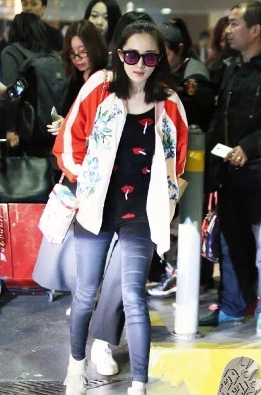
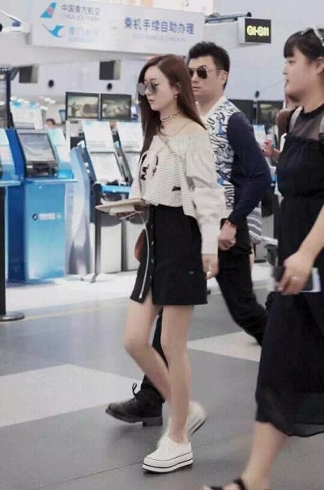

昨天是六一儿童节，也是小糯米的生日。时间过得好快，大幂幂大婚的场景还历历在目，一转眼女儿都已经两岁了。
为此，她在百忙之中专门抽空回了一趟在香港的家，去陪小糯米过生日。
老公刘恺威也发了一张三人握刀切蛋糕的温馨皂片。
所以啊，那些离婚的传言，应该不攻自破了吧？更何况俩夫妻之前都已经声明了好多次，是我都说累了。还有那些操心小糯米没父母管的，人家的生活是他们自己的事，还不如操心今天晚上吃点啥呢
最近杨幂的电视剧《亲爱的翻译官》正在热播，可以看到演技进步了不少，一路走高的收视成绩也拯救了一度低迷的湖南卫视。看到了吧，人家的实力在那，你越黑，她就越红，国民度和扛收视能力简直打那些黑子的脸。
从当年红透半边天的《宫锁心玉》到现在，小她还是很感慨的。在这新人辈出的娱乐圈，杨幂这块招牌却屹立不倒，从这一点看，了不起。
其实最让小她羡慕的是，这些年过去了，哪怕嫁了人生了娃，大幂幂还是各种少女。
皮肤各种吹弹可破，好想跟大幂幂学自拍技巧~
更重要的是，穿衣能力直线上升。从刚开始被群嘲的品味到现在的时尚达人，大幂幂是越来越美了。
比如昨天回香港的机场路透，目测大幂幂这一身又将成为争相模仿的爆款。
棒球衫+玫瑰帽+运动鞋的搭配，简直不要太fashion
外套来自opening ceremony~

鞋子是Golden Goose，就是你们宋仲基老公爱穿的那款小脏鞋。

背包是Saint Laurent绿色迷彩书包铆钉款，嗯...官网售价1190美元。
内搭是Gosha 1984印字t恤，这个咱们能hold住，官网售价24.8美元。
大幂幂的机场路透造型一向都很靠谱，反正每次看完，小她都想跟着她这一身去买买买。
那阵子特别火的半丸子头~


超级喜欢这一身，牛仔短裙+淡蓝色衬衫，大幂幂的身材是真的好啊~
这些美腿，简直了。。
和杨幂一样从大规模黑潮中走过来的，还有赵丽颖。可是这姑娘，一直都是时尚黑洞，只顾专心拍戏。
呐，随便甩几张之前的。
身材好啊，可是确定不是床单？
棒棒糖萌啊，可这一身黑实在压抑呀~
丸子头可爱呀，可这确定不是病号服？
但是最近一次的机场亮相，着实感觉这姑娘逐渐上道了，终于有了时尚的feel~
TODS一字肩上衣+黑色排扣短裙+Chloe 链条包，纤细的脖子上还带着choke项圈，小骨这一身真心美到我了。


最近被黑得比较惨的，还有古力娜扎。怎么说呢，感觉娜扎现在经历的这一切，就是杨幂和赵丽颖经历的曾经，就看她有没有本事像那两位一样挺住走出来了。
用作品说话吧，可是今年上半年几部作品连续播出各种霸屏，也没见娜扎趁势翻身。还是观众缘和演技不到位的原因吧~
可是小她觉得吧，你有权利不喜欢人家，那就不喜欢好了，大不了不看她呗。可是实在无法理解那些P遗照、诅咒家人的人，娜扎是杀人了还是放火了？可以不喜欢，但是请尊重。
抛开其他不说，单纯看娜扎的颜，是真的美嘛！
明星的私服，最能彰显她在生活里的品味。同样看娜扎机场的路透，肤白貌美大长腿~作为一枚颜狗，一本正经地满足。
黑吧黑吧，娜扎还年轻，好好拍戏、磨炼演技、沉默是金，说不定这姑娘几年后也和杨、赵一样，让黑子打脸了呢？娱乐圈的人和事，谁说得准？